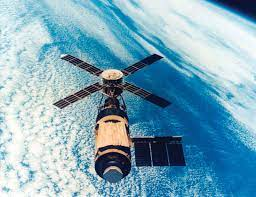
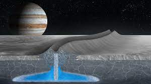

1969
The United States sent the first astronauts to the Moon on Apollo11.
Neil Armstrong became the first man to set foot on the Moon.

1970
NASA launched a series of spce probes to study different planets.
1971
The Soviet Union launched the first Soviet Salyut 1 space station. NASA also launched the skylab space station.

1972
Scientists made a range of discoveries through space probes.
Their
discoveries include Jupiter's moon, called Europa, and Saturn's moon, called
Enceladus, which both have oceans.
Many researches and scientists found
different types of stars through the evolution of telescopes, such as the
kepler Space Telescope.